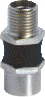
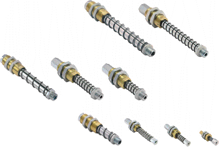
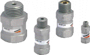

Гибкие ниппели для присосок серии NPF. Пружинные плунжеры Серия NPM-NPR (противоповоротные). Запорные клапаны Серия VNV
Ниппель представляет собой шарнирный металлический фитинг, закрытый резиновой втулкой. Ниппель может изгибаться во всех направлениях для придания правильного положения присоске по отношению к детали, особенно если деталь расположена под углом к присоске.

Пружинные плунжеры используются в тех случаях, когда высота объёктов сильно именяется. Пружина также обеспечивает плавный прижим присоски к детали, что упрощает построение устройств для управления транспортировочной системой.

В основном запорные клапаны Серии VNV используются в системах, содержащих несколько присосок, для уменьшения расхода через те из них, которые не накрыли изделие. При использовании запорных клапанов система поддерживает необходимую глубину вакуума и работает корректно.
